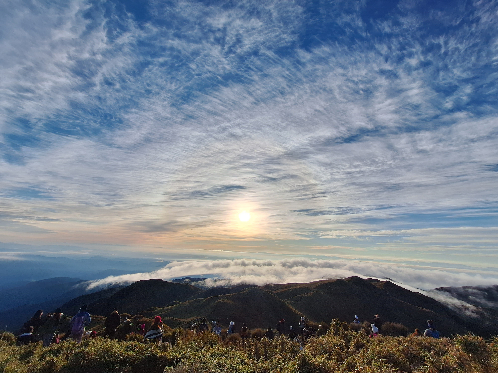

Park Profile • Benguet
Mount Pulag National Park
Mount Pulag is known for its high-altitude grassland and sea of clouds. Hikers should register, follow guides and park rules, and prepare for cold weather.
Mt. Pulag National Park lies on the north and south spine of the Grand Cordillera Central that stretches from Pasaleng, Ilocos Norte to the Cordillera Provinces. It falls within the administrative jurisdiction of two (2) Regions: Cordillera Administrative Region (CAR) and Cagayan Valley (R2).
The whole park is located within the Philippine Cordillera Mountain Range and is very rugged, characterized by steep to very steep slopes at the mountainsides and generally rolling areas at the mountain peak. Mt. Pulag National Park is the highest peak in Luzon and is the second highest mountain in the Philippines with an elevation of 2,922 m. above sea level.
Topography
The summit of Mt. Pulag is covered with grass and dwarf bamboo plants. At lower elevations, the mountainside has a mossy forest veiled with fog, and full of ferns, lichens and moss. Below this is the pine forest growing on barren, rocky slopes. Falls, rivers and small lakes mark the area.
Biodiversity
The Park has a large diversity of flora and fauna, many of which are endemic to the mountain. Its wildlife includes threatened mammals such as the Philippine Brown Deer, Northern Luzon Giant Cloud Rat and the Luzon Pygmy Fruit Bat. One can also find several orchid species some of which are possibly endemic to Mt. Pulag, and other rare flora such as the pitcher plant.
Helpful reminders
- Check official park announcements and local weather before visiting.
- Follow posted rules and instructions from park staff or guides.
- Respect nature and local communities; take all trash with you.